PW-WOORI-03 · 기록 화면
기록 64 + 홈 44 + Shell 46 = 154개 검증 묶음 PASS
모든 캡처는 임시 브라우저 context의 fixture입니다. 사용자 저장소에 데이터를 주입하지 않았습니다. 이미지를 누르면 원본 크기로 열립니다.
요청한 화면과 오류 상태

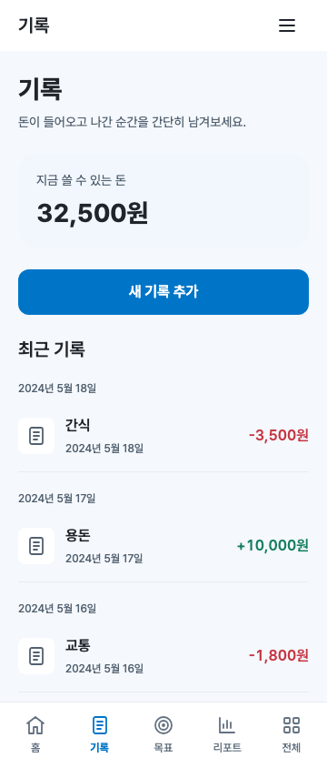

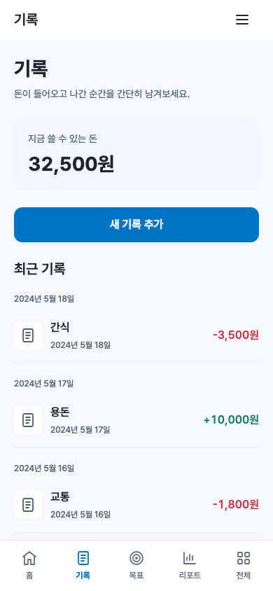

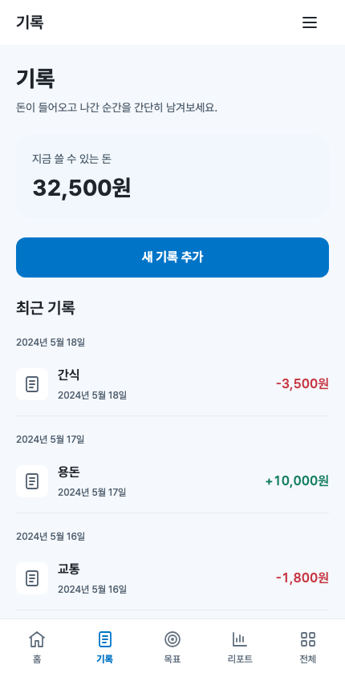

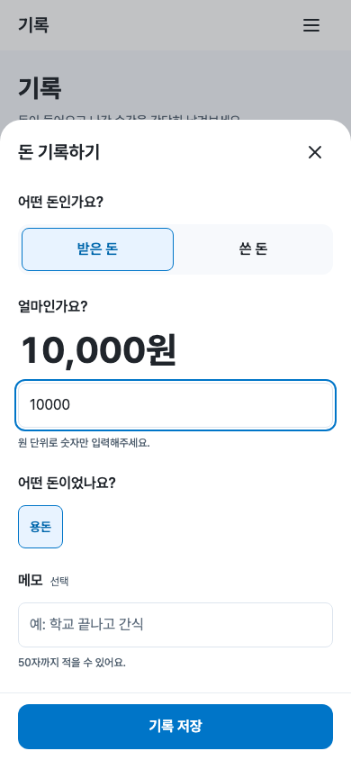

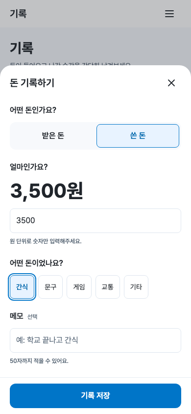

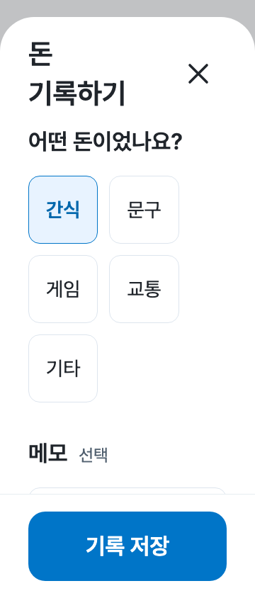

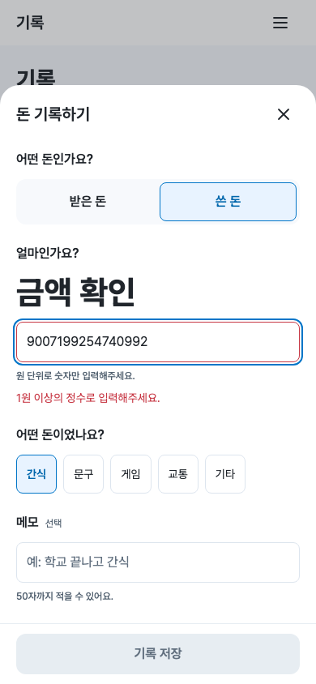

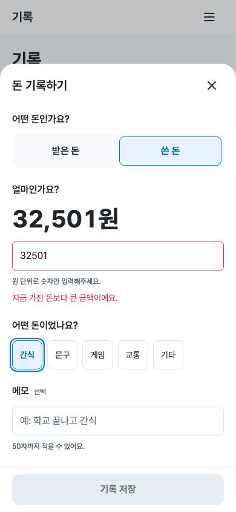

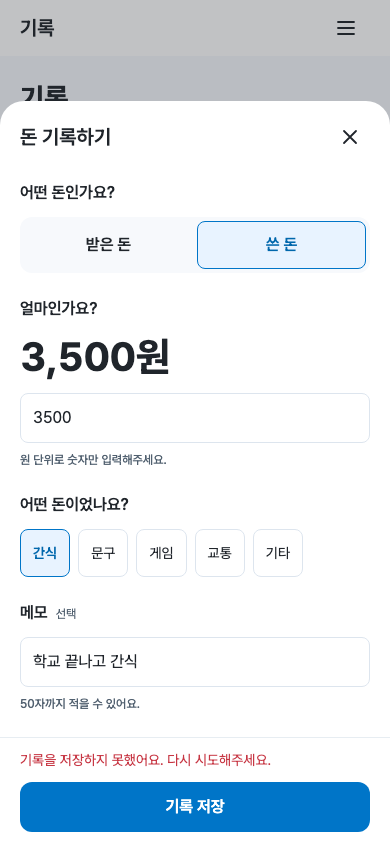

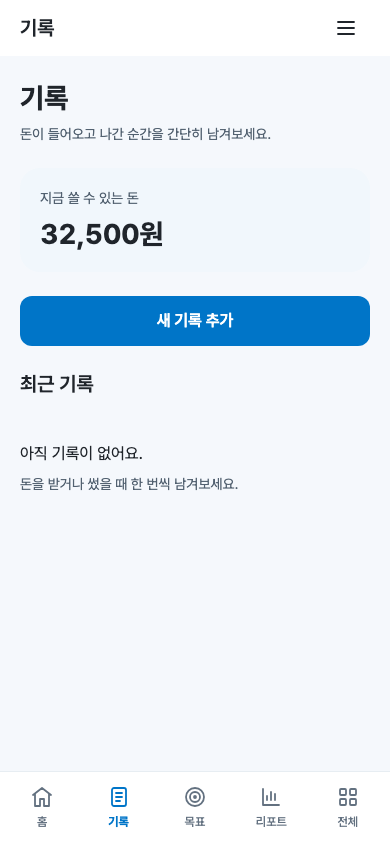

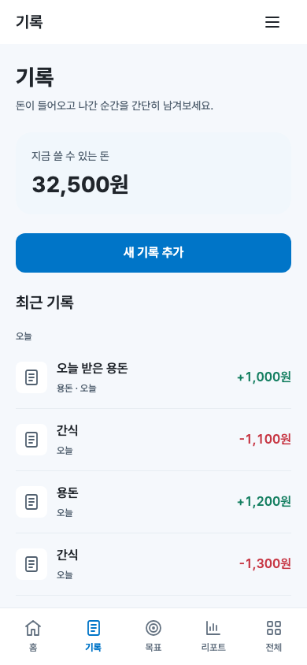

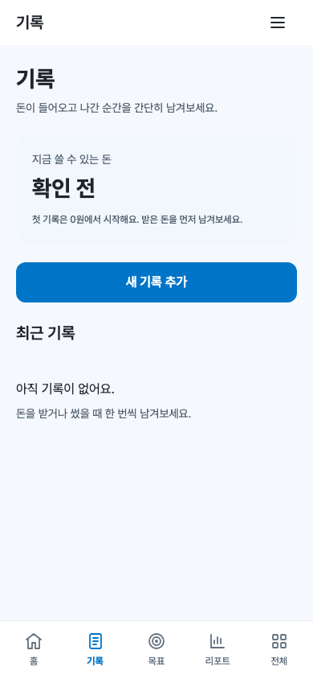

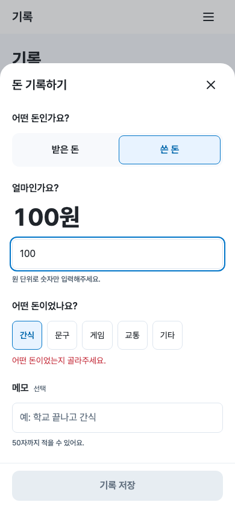


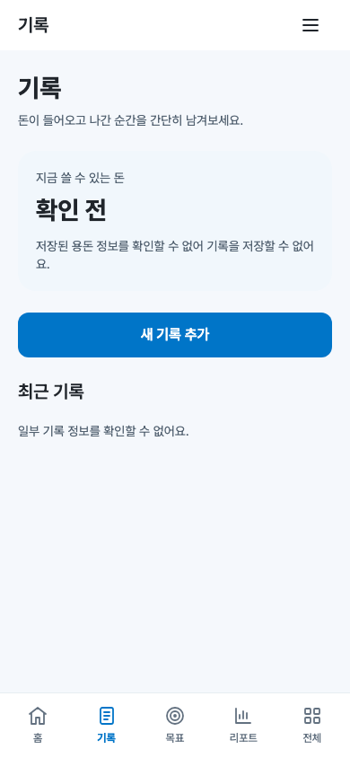

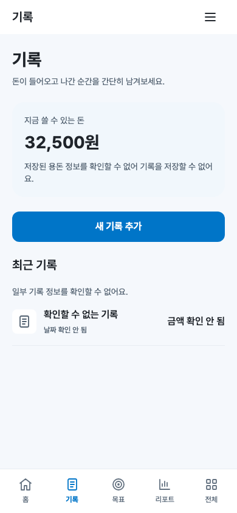

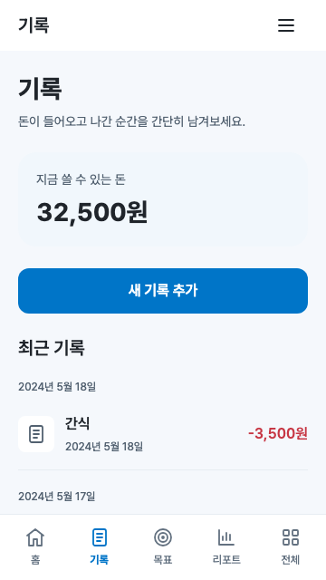

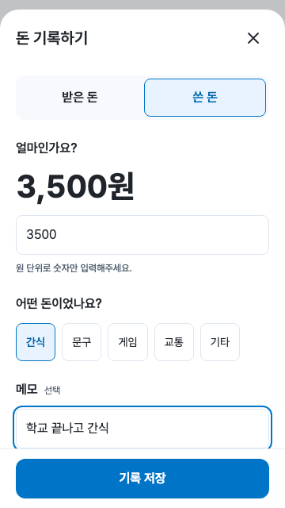

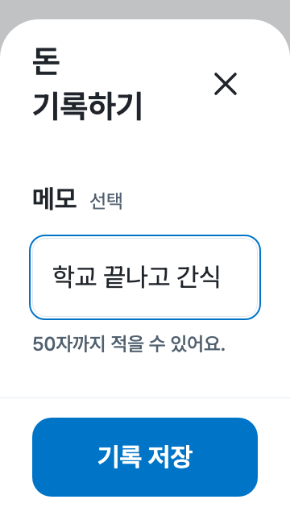

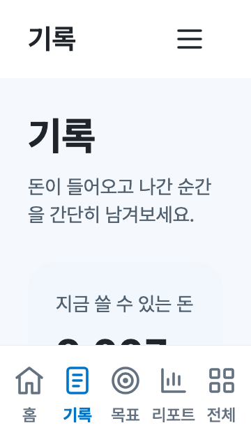

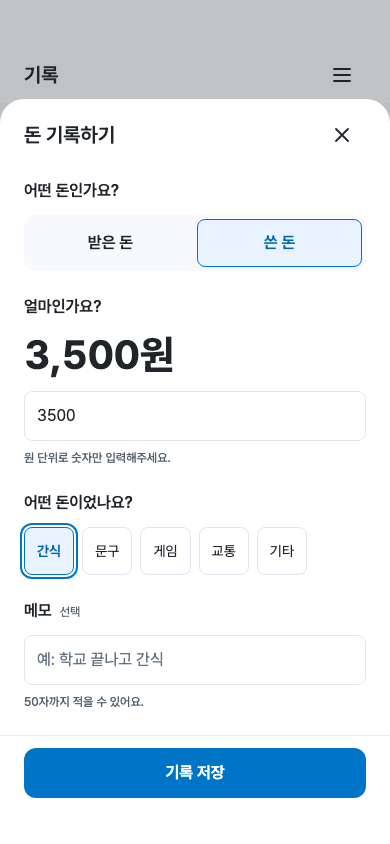

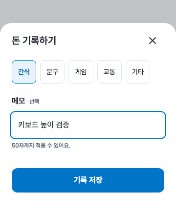

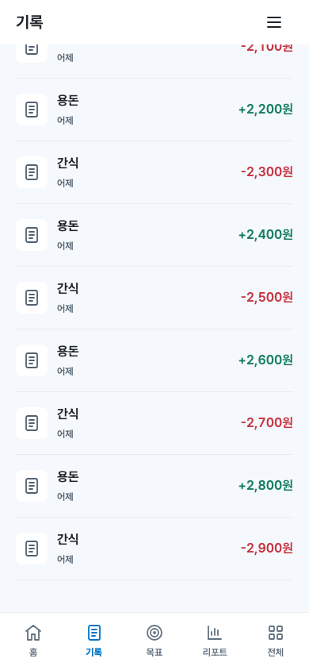

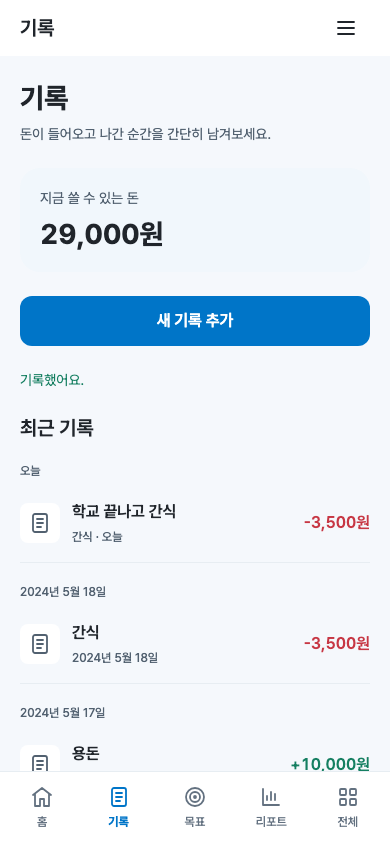

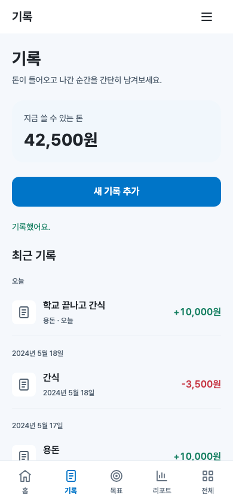

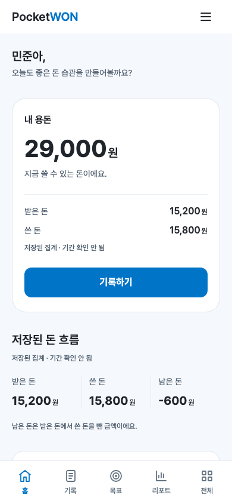

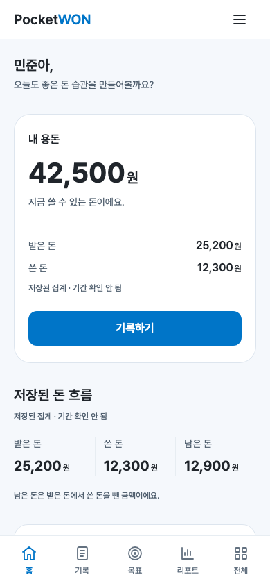

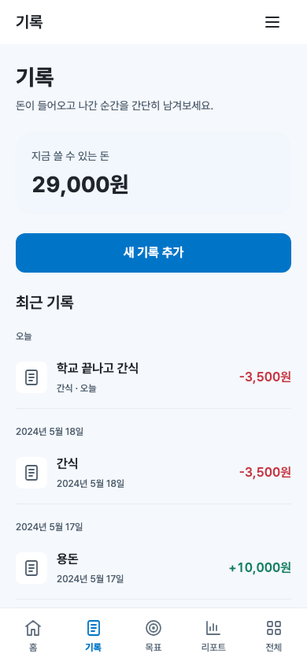

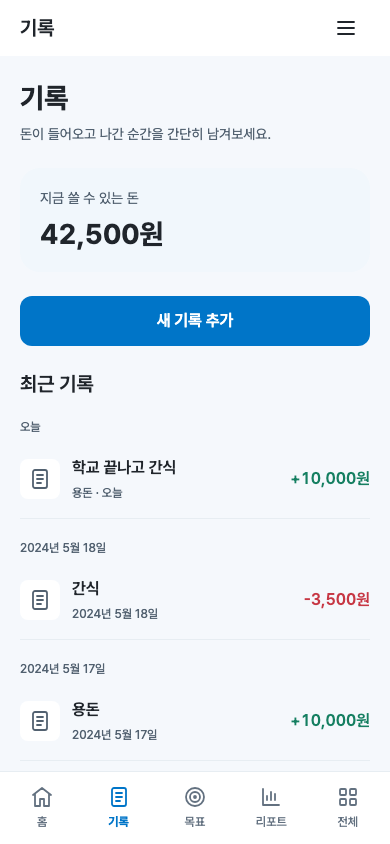
실물 모바일 키보드·스크린리더 테스트는 미수행입니다. 여러 탭의 동시 localStorage 쓰기에 대한 원자적 트랜잭션을 보장하지 않습니다. 목표·리포트·전체는 placeholder이며 다음 슬라이스를 구현하지 않았습니다.